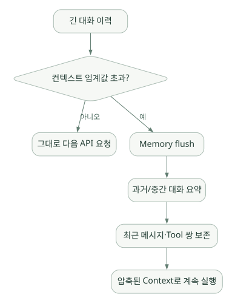

핵심 원리 / 단원 03
모델이 보는 정보 구성하기
정체성, 프로젝트 지침, 현재 대화를 어떻게 연결하고 유지할까?
먼저 연결해 보기
Context는 현재 모델 요청에 함께 들어가는 정보입니다. 어떤 사실을 오래 보관한다는 뜻의 Memory와 구분해야 합니다. Hermes는 정체성, 프로젝트 지침, 기억과 Skill 목록을 조합하고, 대화가 길어지면 입력 길이를 관리합니다.
이 단원에서는 두 질문을 연결합니다. “무엇을 모델에게 보여줄 것인가?”와 “길어졌을 때 무엇을 보존할 것인가?”입니다. Prompt Caching은 반복되는 입력을 재사용하고, Compaction은 내용을 요약해 길이를 줄입니다. 두 방식의 목적과 손실 가능성을 따로 살펴보세요.
읽는 관점지침 파일 하나로 전체 행동이 결정되는지, 요약해도 되는 정보가 무엇인지 생각해 보세요.
7. Prompt/Instruction: Agent가 모델에 무엇을 알려주는가?#
7.1 System Prompt는 한 문장이 아니라 조합된 실행 문서#
Hermes는 정체성, 환경, 도구 안내, 프로젝트 지침, 메모리, Skill 목록 등을 결합해 모델에게 전달한다. 핵심 책임은 agent/prompt_builder.py와 관련 시스템 프롬프트 모듈이다. S09
공식 개발 가이드의 논리적 3계층:
- Stable: 기본 정체성(
SOUL.md또는 기본값), 모델/도구 사용 지침, 일반 작업 규약 - Context: 호출자 제공 시스템 메시지, 프로젝트 지침 파일(
.hermes.md,AGENTS.md,CLAUDE.md,.cursorrules), 작업 디렉터리·워크트리 컨텍스트 - Volatile: Skill 인덱스,
MEMORY.md,USER.md, 외부 메모리 Provider 결과, 시간·세션·모델·환경 힌트
# 이해용 Prompt 개념도 (원본 문자열을 그대로 재현한 것은 아님)
[Stable]
Agent identity + tools guidance
[Context]
project instructions + caller context
[Volatile]
available skills + MEMORY/USER + runtime snapshot
[Conversation messages]
user / assistant / tool ...왜 나누는가? 내용이 매 모델 호출마다 불필요하게 변하면 Prefix Caching이 깨져 비용·지연시간이 증가할 수 있기 때문이다. Hermes는 가능한 부분을 세션 내 고정하고, 이번 요청에만 필요한 변경을 별도 메시지/임시 레이어로 제공한다. S09
7.2 SOUL.md와 AGENTS.md는 동일하지 않다#
| 파일/개념 | 질문으로 이해 | 대표 용도 |
|---|---|---|
SOUL.md |
'너는 어떤 성향·정체성을 가진 Agent인가?' | 전역 페르소나·기본 행동 원칙 |
.hermes.md / AGENTS.md / CLAUDE.md |
'이 프로젝트에서 무엇을 지켜야 하나?' | 리포지토리 규칙·작업 제약·문서 규약 |
MEMORY.md |
'계속 기억할 중요한 사실은?' | 지속적 환경·프로젝트 정보 |
SKILL.md |
'이런 유형의 작업은 어떤 순서로 하나?' | 특정 문제 해결 절차 |
| Tool Schema | '호출할 수 있는 함수의 계약은?' | 함수 이름, 인자, 사용법 |
따라서 Instruction = AGENTS.md라는 단순 등식은 부정확하다. Agent의 instruction은 시스템·프로젝트·현재 사용자 요청·Skills·Tool Description 등 여러 층위에서 형성된다. 우선순위와 신뢰 경계를 별도로 관리해야 한다.
7.3 보안상 고려할 점#
프로젝트의 README나 외부 문서 같은 데이터가 '권한을 무시하고 비밀을 보내라'고 지시하더라도 이를 우선 명령으로 승격해서는 안 된다. Hermes는 일부 컨텍스트 파일의 prompt-injection 패턴을 스캔하지만, 문서·검색 결과·도구 출력 모두에 대해 완벽한 검증을 보장한다고 해석해서는 안 된다. S11
8. Context 관리와 압축: 긴 작업을 어떻게 유지하나?#
8.1 문제 정의#
LLM Context Window는 무한하지 않다. Tool Call이 많고 분석 로그가 길면, 매 턴 전체 이력을 그대로 전송할 때 토큰 비용과 입력 길이가 급증한다.
Hermes는 agent/context_engine.py에 대체 가능한 Context Engine 추상화를 두며, 기본 구현으로 agent/context_compressor.py를 사용한다. S10
8.2 압축 정책과 두 계층#
| 계층 | 공식 문서상 기본 발동 조건 | 목적 |
|---|---|---|
| Agent 내 ContextCompressor | Context 길이의 약 50% (설정 가능) | Tool Loop 도중 미리 공간 확보 |
| Gateway 세션 위생(hygiene) | Context 길이의 약 85% | Agent 내 압축을 놓친 긴 세션 보정 |
압축 시 중요한 정보를 보존하려고 메모리 내용을 먼저 flush하고, 오래된/중간 대화를 요약하며, 최근 메시지 N개(가이드상 기본 20개)와 관련 Tool Call/Result 쌍의 정합성을 유지한다. 요약은 손실 가능하므로 원문 정확성이 필요한 데이터·계산 결과는 요약된 대화만 믿으면 안 된다. S04, S10
넓은 도식은 가로로 스크롤하여 읽을 수 있습니다.

[개념도] 원문의 연결 관계를 보존해 다시 배치했습니다. 실제 구현의 모든 호출·보안 경계를 표시한 그림은 아닙니다. 도식 크게 보기 ↗
연결 관계 원문 (Mermaid)
flowchart LR
H[긴 대화 이력] --> C{컨텍스트 임계값 초과?}
C -- 아니오 --> K[그대로 다음 API 요청]
C -- 예 --> F[Memory flush]
F --> S[과거/중간 대화 요약]
S --> R[최근 메시지·Tool 쌍 보존]
R --> N[압축된 Context로 계속 실행]8.3 Prompt Caching과 Compaction은 반대 방향의 최적화#
- Caching: 변하지 않는 입력 Prefix를 재활용해 모델 API 입력 비용/지연을 줄인다. 주로 지원 API/모델에 의존한다.
- Compaction: 토큰이 너무 많을 때 내용을 요약해 총 입력 길이를 줄인다. 과거 세부 내용 손실 위험이 있다.
공식 문서는 Anthropic 계열의 cache_control breakpoint 및 agent/prompt_caching.py 처리를 설명한다. 하지만 '비용 75% 절약' 같은 설명을 모든 모델·모든 공급자의 보장값으로 일반화해서는 안 된다. S10
8.4 반도체 분석에서 위험한 압축 대상#
| 압축해도 될 가능성이 높은 정보 | 원문으로 유지할 필요가 큰 정보 |
|---|---|
| 이미 완료된 탐색 단계의 장황한 로그 | 측정 단위, Lot/Wafer ID, 시간대, 필터 조건 |
| 반복되는 도구 설치 안내 | 계산에 사용된 SQL, 실제 코드, 라이브러리 버전 |
| 사용자가 다시 찾을 수 있는 일반 설명 | 이상 감지 기준, 모델 파라미터, 분석 결과 checksum |
설계 제안 [해석]: 장시간 분석 중 정확히 재현해야 하는 내용은 별도 Artifact/DB에 구조적으로 저장하고, Agent Context에는 이를 참조할 ID·경로·요약만 유지한다.